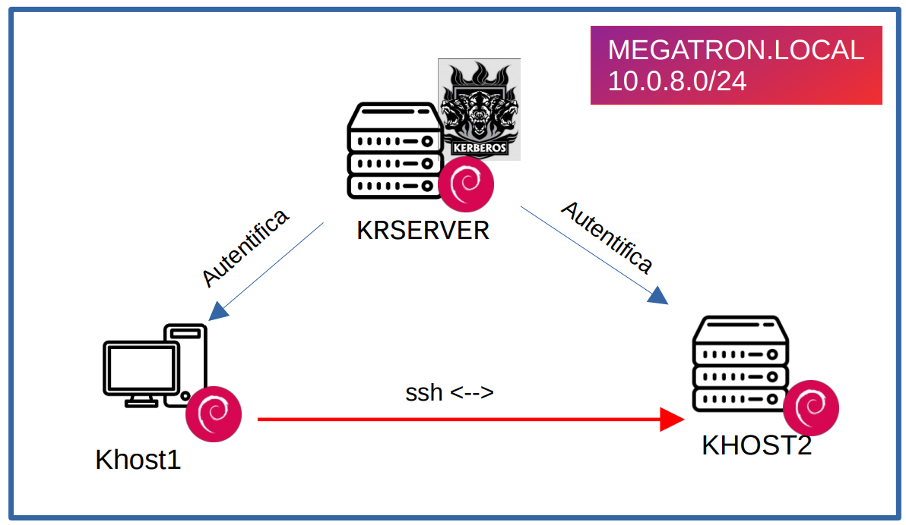

Configuración de SSH + kerberos
Definición y objetivos
Esta documentación se centra en el despliegue de un servidor Kerberos en un entorno de red y su integración con SSH.
Networking
| megatron.local | INTERFACE1 | IP management | INTERFACE2 | IP2 service |
|---|---|---|---|---|
| kserver | ens18 | 192.168.4.201/24 | ens19 | 10.0.8.10/24 |
| khost1 | ens18 | 192.168.4.202/24 | ens19 | 10.0.8.50/24 |
| khost2 | ens18 | 192.168.4.203/24 | ens19 | 10.0.8.51/24 |
Esquema de la arquitectura

Configuración
Configuracion krserver
Insertar registros DNS de forma manual en /etc/hosts
127.0.0.1 localhost
127.0.1.1 kserver.megatron.local kserver
# KERBEROS
10.0.8.10 kserver.megatron.local
10.0.8.50 khost1.megatron.local
10.0.8.51 khost2.megatron.local
Instalar paquetes
apt install krb5-kdc krb5-admin-server
Configurar datos de entrada para el servidor del reino y el dominio del servidor
Reino: MEGATRON.LOCAL
Ser. Kerberos: krserver.megatron.local
Serv. Admin Kerberos: krserver.megatron.local
Desactivar Ks4 /etc/default/krb5-kdc. Añadir
KRB4_MODE=disable
RUN_KRB524D=false
Añdir en /etc/krb5.conf. El resto de realms configurados por defecto se pueden borrar
[domain_realm]
.megatron.local = MEGATRON.LOCAL
megatron.local = MEGATRON.LOCAL
Definir nuevo realm y reiniciar servicios. Importante agregar contraseña
krb5_newrealm
systemctl start krb5-admin-server
systemctl start krb5-kdc
Acceder a la consola de kerberos. Nos pide contraseña root realm
kadmin.local
Crear usuario y agregarlo como administrador. Nos pide contraseña para el usuario
kadmin.local: add_principal israel@MEGATRON.LOCAL
kadmin.local: add_principal israel/admin@MEGATRON.LOCAL
Habilitamos usuarios administradores descomentado la linea en /etc/krb5kdc/kadm5.acl
*/admin *
Configurar los clientes de KERBEROS (KHOST1 KHOST2)
Al no configurar DNS metemos registros a mano. /etc/hosts
127.0.0.1 localhost
127.0.1.1 khost2.megatron.local khost2
# KERBEROS
10.0.8.10 kserver.megatron.local
10.0.8.50 khost1.megatron.local
10.0.8.51 khost2.megatron.local
Instalar paquetes y configurar
apt-get install krb5-user krb5-config
Reino: MEGATRON.LOCAL
Ser. Kerberos: krserver.megatron.local
Serv. Admin Kerberos: krserver.megatron.local
Añdir en /etc/krb5.conf. El resto de realms configurados por defecto se pueden borrar
[domain_realm]
.megatron.local = MEGATRON.LOCAL
megatron.local = MEGATRON.LOCAL
Compobamos que obtenemo ticket de krserver. Nos pide contraseña de usuarios
x@khost2:~$ kinit israel
Password for israel@MEGATRON.LOCAL:
x@khost2:~$ klist
Ticket cache: FILE:/tmp/krb5cc_1000
Default principal: israel@MEGATRON.LOCAL
Valid starting Expires Service principal
10/28/2022 15:02:08 10/29/2022 01:02:08 krbtgt/MEGATRON.LOCAL@MEGATRON.LOCAL
renew until 10/29/2022 15:01:39
x@khost2:~$
Configurar servidor ssh (KHOST2)
En el servidor krserver generamos y exportamos las claves del servidor ssh khost2
kadmin.local
kadmin.local: add_principal -randkey host/khost2.megatron.local@MEGATRON.LOCAL
kadmin.local: ktadd host/israel.megatron.local
kadmin.local: ktadd -k /tmp/khost2.keytab host/khost2.megatron.local@MEGATRON.LOCAL
Le eviamos la clave generada a khost2
scp /tmp/khost2.keytab x@khost2.megatron.local:/home/x
En el servidor ssh khost2 movemos las claves a /etc y damos permisos
chmod 400 /etc/khost2.keytab
chown sshd:ssh /etc/khost2.keytab
Activar en /etc/ssh/sshd_config
# GSSAPI options
GSSAPIAuthentication yes
GSSAPICleanupCredentials yes
Reiniciar daemon ssd
systemctl restart sshd
Configurar cliente ssh (KHOST1)
Editar /etc/ssh/ssh_config
GSSAPIAuthentication yes
GSSAPIDelegateCredentials yes
systemctl restart ssh
Obtener ticket con el usuario
x@khost2:~$ kinit israel Password for israel@MEGATRON.LOCAL: x@khost2:~$ klist Ticket cache: FILE:/tmp/krb5cc_1000 Default principal: israel@MEGATRON.LOCAL Valid starting Expires Service principal 10/28/2022 15:02:08 10/29/2022 01:02:08 krbtgt/MEGATRON.LOCAL@MEGATRON.LOCAL renew until 10/29/2022 15:01:39 x@khost2:~$
Ya nos podemos loggear al el servidor ssh (khost2) desde khost1
x@khost1:~$ ssh -v israel@khost2.megatron.local
OpenSSH_8.4p1 Debian-5+deb11u1, OpenSSL 1.1.1n 15 Mar 2022
debug1: Reading configuration data /etc/ssh/ssh_config
debug1: /etc/ssh/ssh_config line 19: include /etc/ssh/ssh_config.d/*.conf matched no files
debug1: /etc/ssh/ssh_config line 21: Applying options for *
debug1: Connecting to khost2.megatron.local [10.0.8.51] port 22.
debug1: Connection established.
debug1: identity file /home/x/.ssh/id_rsa type -1
debug1: identity file /home/x/.ssh/id_rsa-cert type -1
debug1: identity file /home/x/.ssh/id_dsa type -1
debug1: identity file /home/x/.ssh/id_dsa-cert type -1
debug1: identity file /home/x/.ssh/id_ecdsa type -1
debug1: identity file /home/x/.ssh/id_ecdsa-cert type -1
debug1: identity file /home/x/.ssh/id_ecdsa_sk type -1
debug1: identity file /home/x/.ssh/id_ecdsa_sk-cert type -1
debug1: identity file /home/x/.ssh/id_ed25519 type -1
debug1: identity file /home/x/.ssh/id_ed25519-cert type -1
debug1: identity file /home/x/.ssh/id_ed25519_sk type -1
debug1: identity file /home/x/.ssh/id_ed25519_sk-cert type -1
debug1: identity file /home/x/.ssh/id_xmss type -1
debug1: identity file /home/x/.ssh/id_xmss-cert type -1
debug1: Local version string SSH-2.0-OpenSSH_8.4p1 Debian-5+deb11u1
debug1: Remote protocol version 2.0, remote software version OpenSSH_8.4p1 Debian-5+deb11u1
debug1: match: OpenSSH_8.4p1 Debian-5+deb11u1 pat OpenSSH* compat 0x04000000
debug1: Authenticating to khost2.megatron.local:22 as 'israel'
debug1: SSH2_MSG_KEXINIT sent
debug1: SSH2_MSG_KEXINIT received
debug1: kex: algorithm: curve25519-sha256
debug1: kex: host key algorithm: ecdsa-sha2-nistp256
debug1: kex: server->client cipher: chacha20-poly1305@openssh.com MAC: <implicit> compression: none
debug1: kex: client->server cipher: chacha20-poly1305@openssh.com MAC: <implicit> compression: none
debug1: expecting SSH2_MSG_KEX_ECDH_REPLY
debug1: Server host key: ecdsa-sha2-nistp256 SHA256:V51lOSp6fLZlsISKdQFImQh7J31r+Pyt1aya+Kdrs3Y
debug1: Host 'khost2.megatron.local' is known and matches the ECDSA host key.
debug1: Found key in /home/x/.ssh/known_hosts:1
debug1: rekey out after 134217728 blocks
debug1: SSH2_MSG_NEWKEYS sent
debug1: expecting SSH2_MSG_NEWKEYS
debug1: SSH2_MSG_NEWKEYS received
debug1: rekey in after 134217728 blocks
debug1: Will attempt key: /home/x/.ssh/id_rsa
debug1: Will attempt key: /home/x/.ssh/id_dsa
debug1: Will attempt key: /home/x/.ssh/id_ecdsa
debug1: Will attempt key: /home/x/.ssh/id_ecdsa_sk
debug1: Will attempt key: /home/x/.ssh/id_ed25519
debug1: Will attempt key: /home/x/.ssh/id_ed25519_sk
debug1: Will attempt key: /home/x/.ssh/id_xmss
debug1: SSH2_MSG_EXT_INFO received
debug1: kex_input_ext_info: server-sig-algs=<ssh-ed25519,sk-ssh-ed25519@openssh.com,ssh-rsa,rsa-sha2-256,rsa-sha2-512,ssh-dss,ecdsa-sha2-nistp256,ecdsa-sha2-nistp384,ecdsa-sha2-nistp521,sk-ecdsa-sha2-nistp256@openssh.com,webauthn-sk-ecdsa-sha2-nistp256@openssh.com>
debug1: SSH2_MSG_SERVICE_ACCEPT received
debug1: Authentications that can continue: publickey,gssapi-keyex,gssapi-with-mic,password
debug1: Next authentication method: gssapi-with-mic
debug1: Delegating credentials
debug1: Delegating credentials
debug1: Authentication succeeded (gssapi-with-mic).
Authenticated to khost2.megatron.local ([10.0.8.51]:22).
debug1: channel 0: new [client-session]
debug1: Requesting no-more-sessions@openssh.com
debug1: Entering interactive session.
debug1: pledge: network
debug1: client_input_global_request: rtype hostkeys-00@openssh.com want_reply 0
debug1: Sending environment.
debug1: Sending env LANG = en_US.UTF-8
Linux khost2 5.10.0-18-amd64 #1 SMP Debian 5.10.140-1 (2022-09-02) x86_64
The programs included with the Debian GNU/Linux system are free software;
the exact distribution terms for each program are described in the
individual files in /usr/share/doc/*/copyright.
Debian GNU/Linux comes with ABSOLUTELY NO WARRANTY, to the extent
permitted by applicable law.
Web console: https://khost2.megatron.local:9090/ or https://192.168.4.203:9090/
Last login: Fri Oct 28 14:09:35 2022 from 10.0.8.50
israel@khost2:~$